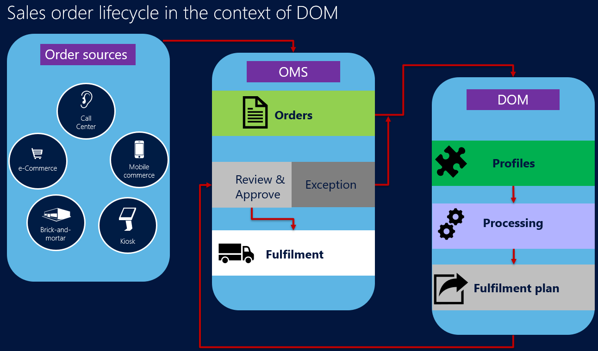
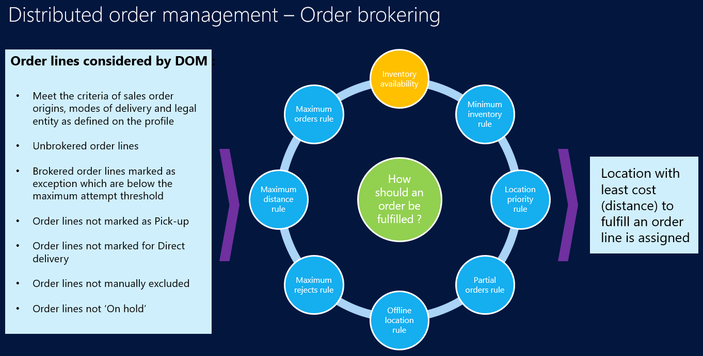

Distributed order management (DOM)
In the new paradigm for commerce operations, retailers strive to provide personalized customer engagement, omni-channel experiences, and frictionless interactions. Because so many choices are available, consumers will shop wherever they can have the most favorable experience. In many cases, prices and products are no longer the top deciding factors for consumers.
To help improve the customer experience, retailers must have visibility into their inventory in real time, across all their channels. A single, holistic view of all the inventory can help optimize order fulfillment, allocation, and distribution. Therefore, adoption and implementation of a distributed order management (DOM) system are becoming more imperative for retailers.
DOM optimizes order fulfillment across a complex network of systems and processes. It relies on a single, global view of inventory across the whole organization to intelligently manage orders, so that they are fulfilled accurately and in a more cost-effective manner. By improving the efficiency of a retailer's supply chain, DOM helps the retailer better meet customer expectations.
The following illustration shows the lifecycle of a sales order in a DOM system.

Set up DOM
Go to System administration > Setup > License configuration.
On the Configuration keys tab, expand the Commerce node, and then select the Distributed Order Management check box.
Go to Retail and Commerce > Distributed order management > Setup > DOM parameters.
On the General tab, set the following values:
Enable distributed order management – Set this option to Yes.
Confirm Bing Maps usage for DOM – Set this option to Yes.
Note
You can set this option to Yes only if the Enable Bing Maps option on the Bing Maps tab of the Commerce shared parameters page (Retail and Commerce > Headquarters setup > Parameters > Commerce shared parameters) is also set to Yes, and if a valid key is entered in the Bing Maps key field.
The Bing Maps Dev Center portal allows you to restrict access on your Bing Maps API keys to a set of domains that you specify. With this feature, customers can define a strict set of referrer values or IP address ranges that the key will be validated against. Requests originating from your allow list will process normally, while requests from outside of your list will return an access denied response. Adding domain security to your API key is optional and keys left as-is will continue to function. The allow list for a key is independent from all of your other keys, enabling you to have distinct rules for each of your keys. Distributed Order Management does not support the setting up of domain-referred properties.
Retention period in days – Specify how long the fulfillment plans that DOM runs generate are kept in the system. The DOM fulfillment data deletion job setup batch job will delete any fulfillment plan that is older than the number of days that you specify here.
Rejection period (in days) – Specify how much time must pass before a rejected order line can be assigned to the same location.
On the Solver tab, set the following values:
Max auto-fulfillment attempts – Specify how many times the DOM engine will try to broker an order line to a location. If the DOM engine can't broker an order line to a location in the specified number of attempts, it will flag the order line as an exception. It will then skip that line in future runs until the status is manually reset.
Local store region radius – Enter a value. This field helps determine how locations are grouped and considered equal in terms of distance. For example, if you enter 100, every store or distribution center within a 100-mile radius of the fulfillment address is considered equal in terms of distance.
Solver type – Select a value. Two solver types are released with Commerce: Production Solver and Simplified Solver. For all machines that will run DOM (that is, all servers that are part of the DOMBatch group), Production Solver must be selected. The Production Solver requires the special license key that, by default, is licensed and deployed in production environments. For non-production environments, this license key must be manually deployed. To manually deploy the license key, follow these steps:
- In Microsoft Dynamics Lifecycle Services, open the Shared asset library, select Model as the asset type, and download the DOM license file.
- Start Microsoft Internet Information Services (IIS) Manager, right-click AOSService website, and then select Explore. A Windows Explorer window is opened at <AOS service root>\webroot. Make a note of the <AOS Service root> path, because you will use it in the next step.
- Copy the configuration file in the <AOS Service root>\PackagesLocalDirectory\DOM\bin directory.
- Go to the Headquarters client, and open the DOM parameters page. On the Solver tab, in the Solver type field, select Production solver, and confirm that no error messages appear.
Note
The Simplified Solver is provided so that retailers can try out the DOM feature without having to deploy the special license. Organizations should not use the Simplified Solver in production environments.
The Production Solver improves performance (such as the number of orders and order lines that can be handled in a run) and convergence of results (since a batch of orders might not yield the best result in some scenarios). Some rules like the Partial orders rule and the Maximum number of locations rule require Production Solver.
Go back to Retail and Commerce > Distributed order management > Setup > DOM parameters.
On the Number sequences tab, assign the required number sequences to the various DOM entities.
Note
Before the number sequences can be assigned to the entities, they must be defined on the Number sequences page (Organization administration > Number sequences > Number sequences).
The DOM feature supports the definition of various types of DOM rules, and organizations can configure multiple rules, depending on their business needs. DOM rules can be defined for a group of locations or individual locations, and for a specific product category, product, or variant. To create the grouping of locations that must be used for the DOM rules, follow these steps:
- Go to Retail and Commerce > Channel setup > Fulfillment groups.
- Select New, and enter a name and description for the new group.
- Select Save.
- Select Add line to add a single location to the group. Alternatively, select Add lines to add multiple locations.
Note
In Commerce version 10.0.12 and higher, Ability to specify locations as 'Shipping' or 'Pickup' enabled within Fulfillment group must be enabled in the Feature Management workspace.
This feature add new configurations on the Fulfillment group page so you can define if the warehouse can be used for shipping or if the warehouse/store combination can be used for shipping, pickup, or both.
If you enable the feature, the options available for location selection when you create pickup or shipment orders in POS will be updated.
Enabling the feature also results in updated pages in POS when the "ship all" or "ship selected" operations are selected.
To define rules, go to Retail and Commerce > Distributed order management > Setup > Manage rules. The following DOM rules are currently supported:
Minimum inventory rule – This rule type lets organizations "ring fence" a specific quantity of a product for purposes other than order fulfillment. For example, organizations might not want DOM to consider all the inventory that is available in a store for order fulfillment. Instead, they might want to reserve some inventory for walk-in customers. When this rule type is used, you can define the minimum inventory to keep for a category of products, an individual product, or a product variant per location or group of locations.
Fulfillment location priority rule – This rule type lets organizations define a hierarchy of locations to establish the priority that the DOM engine considers when it tries to identify fulfillment locations for specific products. The valid range of priorities is 1 through 10, where 1 is the highest priority and 10 is the lowest priority. Locations that have higher priority are considered before locations that have lower priority. If the rule is defined as a hard constraint rule, orders are brokered only to locations that priorities are defined for.
Partial orders rule – This rule lets organizations define whether an order or order lines can be partially fulfilled. The following parameters are available:
- Fulfill partial orders? – If this option is set to Yes, DOM can fulfill only part of the quantity on an order line. This partial fulfillment is achieved by splitting the order line.
- Fulfill partial lines? – If this option is set to Yes, DOM can fulfill a partial quantity of order lines. This partial fulfillment is achieved by splitting the order line.
- Fulfill order from one location only – If this option is set to Yes, DOM makes sure that all lines on an order are fulfilled from a single location.
The following table explains the behavior when a combination of these parameters is defined.
Combination number Fulfill partial orders Fulfill partial lines Fulfill order from one location only Description 1 Yes Yes Yes A few lines of the order can be fulfilled, and individual lines can be partially fulfilled, but all the lines must be from the same location in an instance of the DOM run. (This combination isn't currently supported.) 2 Yes No Yes A few lines of the order can be fulfilled, but individual lines can't be partially fulfilled, and all the fulfilled lines must be from the same location in an instance of the DOM run. (This combination isn't currently supported.) 3 Yes Yes No A few lines of the order can be fulfilled, individual lines can be partially fulfilled, and each line can be fulfilled from more than one location in an instance of the DOM run. 4* No Not applicable No All order lines must be fulfilled, individual lines can't be partially fulfilled, and each order line can be fulfilled from a different location. 5* No Not applicable Yes All order lines must be fulfilled, individual lines can't be partially fulfilled, and all the order lines can be delivered from one location only. 6* No Not applicable No This combination works like combination 4, because Fulfill partial lines can't be set to Yes when Fulfill partial orders is set to No. 7* No Not applicable Yes This combination works like combination 5, because Fulfill partial lines can't be Yes when Fulfill partial orders is No. 8 Yes No No A few lines of the order can be fulfilled, but individual lines can't be partially fulfilled, and the various order lines can be fulfilled from more than one location in an instance of the DOM run. 9* No Not applicable Yes All order lines must be fulfilled, and all the order lines must be fulfilled from one location only. * If Fulfill partial orders is set to No, Fulfill partial lines is always considered to be set to No, regardless of how it's actually set.
Note
In Retail version 10.0.5, the parameter Fulfill order from one location only was changed to Maximum fulfilling locations. Instead of allowing a user to configure whether orders can be fulfilled from one location only or fulfilled from as many locations as it can be, users can now specify whether the fulfillment can be from a definite set of locations (up to 5) or from as many locations as it can be. This provides more flexibility in terms of how many locations the order can be fulfilled from. This rule only works with Production Solver.
Offline fulfillment location rule – This rule lets organizations specify a location or group of locations as offline or unavailable to DOM, so that orders can't be assigned to those locations for fulfillment.
Maximum rejects rule – This rule lets organizations define a threshold for rejections. When the threshold is reached, the DOM processor will mark an order or order line as an exception, and exclude it from further processing.
After order lines are assigned to a location, the location can reject an assigned order line, because it might not be able to fulfill that line for some reasons. Rejected lines are marked as an exception and put back into the pool for processing in the next run. During the next run, DOM will try to assign the rejected line to a different location. The new location can also reject the assigned order line. This cycle of assignment and rejection can occur multiple times. When the rejection count hits the threshold that is defined, DOM will mark the order line as a permanent exception and won't pick the line for assignment again. DOM will consider the order line again for reassignment only if a user manually resets the status of the order line.
Maximum distance rule – This rule lets organizations define the maximum distance that a location or group of locations can be to fulfill the order. If overlapping maximum distance rules are defined for a location, DOM will apply the lowest maximum distance that is defined for that location.
Maximum orders rule – This rule lets organizations define the maximum number of orders that a location or group of locations can process during a calendar day. If the maximum number of orders is assigned to a location in a single day, DOM won't assign any more orders to that location for the rest of that calendar day.
Here are some of the common attributes that can be defined for all the preceding rule types:
- Start date and End date – Every rule can be made date-effective by using the these fields.
- Disabled – Only rules that have a value of No for this field are considered in a DOM run.
- Hard constraint – A rule can be defined as either a hard constraint or not a hard constraint. Every DOM run goes through two iterations. In the first iteration, every rule is treated as a hard constraint rule, regardless of the setting of this field. In other words, every rule is applied. The only exception is the Location priority rule. In the second iteration, the rules that weren't defined as hard constraint rules are removed, and the order or order lines that weren't assigned to locations when all the rules were applied are assigned to locations.
Fulfillment profiles are used to group a collection of rules, legal entities, sales order origins, and modes of delivery. Every DOM run is for a specific fulfillment profile. In this way, organizations can define and run a set of rules for a set of legal entities, on orders that have specific sales order origins and modes of delivery. Therefore, if different set of rules must be run for different sets of sales order origins or modes of delivery, the fulfillment profiles can be defined accordingly. To set up fulfillment profiles, follow these steps:
- Go to Retail and Commerce > Distributed order management > Setup > Fulfillment profiles.
- Select New.
- Enter values in the Profile and Description fields.
- Set the Auto apply result option. If you set this option to Yes, the results of the DOM run for the profile will be automatically applied to the sales order lines. If you set it to No, the results can only be viewed in the fulfillment plan. They won't be applied to the sales order lines.
- If you want the DOM profile to be run for orders that have every sales order origin, including orders where the sales order origin is undefined, set the Process orders with empty sales origin option to Yes. To run the profile for only a few sales order origins, you can define them on the Sales origins page, as explained later.
Note
In Commerce version 10.0.12 and higher, Ability to assign Fulfillment group to a Fulfillment Profile must be enabled in the Feature Management workspace.
This feature adds a new configuration on the Fulfillment profile page that can be associated to a single fulfilment group.
If you select the fulfilment group, the DOM rules for that fulfilment profile will efficiently run against the "shipping" warehouses included in the fulfilment group.
To effectively use this feature, ensure that there is one fulfillment group that contains all the shipping warehouses, and then associate that fulfillment group to the fulfillment profile.
- On the Legal entities FastTab, select Add, and then select a legal entity.
- On the Rules FastTab, select Add, and then select the rule to link to the profile.
- Repeat the previous two steps until all the required rules are associated with the profile.
- Select Save.
- On the Action Pane, on the Setup tab, select Modes of delivery.
- On the Modes of delivery page, select New.
- In the Company field, select the legal entity. The list of companies is limited to the legal entities that you added earlier.
- In the Mode of delivery field, select the mode of delivery to associate with this profile. A mode of delivery can't be associated with multiple active profiles.
- Repeat the previous two steps until all the required modes of delivery are associated with the profile.
- Close the Modes of delivery page.
- On the Action Pane, on the Setup tab, select Sales order origins.
- On the Sales origins page, select New.
- In the Company field, select the legal entity. The list of companies is limited to the legal entities that you added earlier.
- In the Sales origin field, select the sales origin to associate with this profile. A sales origin can't be associated with multiple active profiles.
- Repeat the previous two steps until all the required sales origins are associated with the profile.
- Close the Sales origins page.
- Set the Enable profile option to Yes. If there are any errors in the setup, you receive a warning message.
DOM processing
DOM will run only in a batch job. To configure the batch job for DOM runs, follow these steps.
- Go to Retail and Commerce > Distributed order management > Batch processing > DOM processor job setup.
- On the Parameters FastTab, in the Fulfillment profile field, select a profile that DOM must be run for.
- On the Run in the background FastTab, in the Batch group field, select a configured batch group.
- In the Task description field, enter a name for the batch job.
- Select Recurrence, and define the recurrence of the batch job.
- Select OK.
At the time of processing, DOM will consider the order and order lines as described here:
Order lines that meet the criteria for sales order origins, modes of delivery, and legal entity as defined in the DOM profile, and that also meet any of these criteria:
- They are created from commerce channels.
- They have never been brokered by DOM.
- They have been brokered by DOM before, but they are marked as exceptions and are below the maximum threshold for attempts.
- The mode of delivery isn't pick-up or electronic delivery.
- They aren't marked for delivery.
- They aren't manually excluded.
Orders that aren't on hold
After it applies the rules, inventory constraints, and optimization, DOM picks the location that is closest to the customer's delivery address.

Results of DOM runs
If the fulfillment profile is set to Auto apply, the results of the run will be automatically applied to the sales order lines, and the fulfillment plan can be viewed separately. However, if the fulfillment profile isn't set to Auto apply, the results of the run can be seen only from the fulfillment plan view.
To view all the fulfillment plans that are generated, follow these steps.
Go to Retail and Commerce > Distributed order management > Distributed order management.
In the Distributed order management workspace, select the Fulfillment Plans tile.
Select the ID of the relevant order fulfillment plan to view the fulfillment plan.
The order details section of the fulfillment plan shows the original sales order lines that were part of the run. Besides the standard sales order line fields, the order details section also includes the following three DOM-related fields:
- Fulfillment type – This field indicates whether the sales order line is fully brokered, partially brokered, or not brokered at all to a location.
- Split – This field indicates whether one sales order line has been split and brokered to different locations.
- Number of fulfillment locations – This field indicates how many fulfillment lines were created for one sales order line (based on the number of locations that the original sales order line was brokered to).
The order fulfillment details section shows the assignment of the original sales order lines to different locations, together with their quantities.
Order line actions and statuses
The following describes settings on the order line. To open the order line, go to Retail and Commerce > Customers > All sales orders.
If you set the Exclude from DOM processing option on the General tab of the sales order line to Yes, the order or order line will be excluded from DOM processing.
The DOM status field on the General tab of the sales order line can be set to one of the following values:
None – The order line has never been brokered.
Complete – The order line has been successfully brokered and assigned to a location.
Exception – The order line has been brokered but can't be assigned to a location. Exceptions have multiple subtypes that can be viewed from the DOM workspace:
- No quantity available – There is no available inventory to assign the order to in the locations.
- Maximum rejections – The order line has reached the maximum threshold for rejections.
- Data modification conflict – The sales order line has been changed since the order was brokered. Therefore, the fulfillment plan can't be applied to the order.
- Order line specific exception – There are multiple exceptions on the order line.
During the sales order entry, DOM can be run in an interactive mode. While you're entering an order line, after you specify the product and quantity, you can select Update line and then, under DOM, select Suggest fulfillment location. You then see a list of locations that is based on DOM rules that can fulfill the quantity on the order line. This list is sorted by distance. Select a location to set the relevant site and warehouse on the sales order line. For this functionality to work, there must be an existing, active fulfillment profile that matches the sales origin and delivery mode on the sales line.
To view the DOM run logs for a sales order line, select Sales order line, and then, under DOM, select View DOM Logs. The DOM logs show all the events and logs that were generated by the DOM run. The logs can help you understand why a specific location was assigned to the order line, and what rules and constraints were considered as a part of the assignment. On the Manage tab, the DOM logs are also available at the level of the sales order header.
Run a clean-up job for DOM fulfillment plans
As DOM processing is run, fulfillment plans are created. Over time, the system will keep numerous fulfillment plans. To manage the number of fulfillment plans that the system keeps, you can configure a batch job that deletes older fulfillment plans, based on the Retention period in days value.
- Go to Retail and Commerce > Distributed order management > Batch processing > DOM fulfillment data deletion job setup.
- In the Batch group field, select a configured batch group.
- Select Recurrence, and define the recurrence of the batch job.
- Select OK.
More information
Here are some things to consider when you use the DOM feature:
- Currently, DOM looks only at orders that are created from commerce channels. Sales orders are identified as sales orders when the Commerce sale option is set to Yes.
- Microsoft hasn't tested DOM with advanced warehouse management features. Customers and partners must be careful to determine whether DOM is compatible with the advanced warehouse management capabilities and processes that are relevant to them.
- DOM is available only on the cloud version of Commerce. It isn't supported in on-premises deployments.